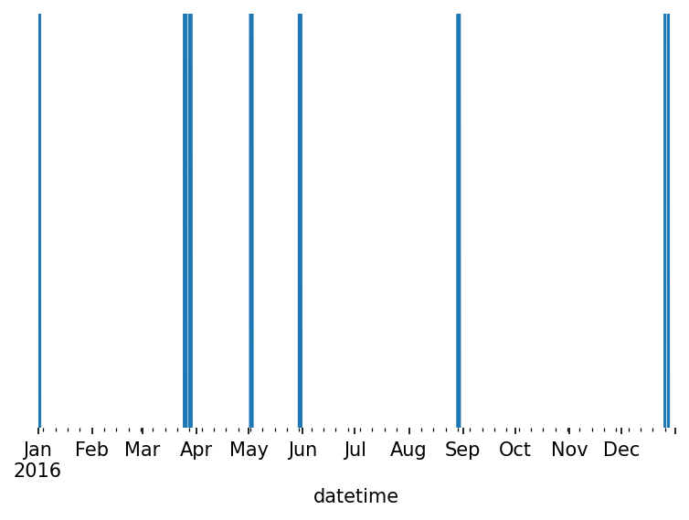

Tuning¶
#exports
import json
import numpy as np
import pandas as pd
from sklearn.ensemble import RandomForestRegressor
from sklearn.pipeline import Pipeline
from mlxtend.feature_selection import SequentialFeatureSelector as SFS
from skopt.plots import plot_objective
from skopt.space import Real, Categorical, Integer
from batopt import clean, discharge, charge, pv, utils
import os
from ipypb import track
import FEAutils as hlp
import matplotlib.pyplot as plt
from IPython.display import JSON
User Inputs¶
intermediate_data_dir = '../data/intermediate'
raw_data_dir = '../data/raw'
cache_data_dir = '../data/nb-cache'
Preparing Data¶
First we'll load in the target and feature data for both the charging and discharging models
charge_x, charge_y = pv.prepare_training_input_data(intermediate_data_dir)
discharge_x, discharge_y = discharge.prepare_training_input_data(intermediate_data_dir)
charge_x.head()
2017-11-10 00:00:00+00:00 0.0
2017-11-10 00:30:00+00:00 0.0
2017-11-10 01:00:00+00:00 0.0
2017-11-10 01:30:00+00:00 0.0
2017-11-10 02:00:00+00:00 0.0
...
2020-07-02 21:30:00+00:00 0.0
2020-07-02 22:00:00+00:00 0.0
2020-07-02 22:30:00+00:00 0.0
2020-07-02 23:00:00+00:00 0.0
2020-07-02 23:30:00+00:00 0.0
Freq: 30T, Name: pv_power_mw, Length: 46368, dtype: float64
| temp_location1 | temp_location2 | temp_location3 | temp_location4 | temp_location5 | temp_location6 | pv_7d_lag | solar_location2 | solar_location3 | solar_location5 | ... | solar_location2_rolling | solar_location3_rolling | solar_location5_rolling | solar_location6_rolling | temp_location1_rolling | temp_location2_rolling | temp_location3_rolling | temp_location4_rolling | temp_location5_rolling | temp_location6_rolling | |
|---|---|---|---|---|---|---|---|---|---|---|---|---|---|---|---|---|---|---|---|---|---|
| 2017-11-10 04:00:00+00:00 | 11.93 | 11.71 | 11.73 | 11.3 | 13.15 | 13.22 | 0 | 0 | 0 | 0 | ... | 0 | 0 | 1.89478e-13 | 3.31587e-13 | 11.805 | 11.56 | 11.6 | 10.65 | 13.085 | 13.215 |
| 2017-11-10 04:30:00+00:00 | 12.06 | 11.89 | 11.805 | 11.295 | 13.26 | 13.325 | 0 | 0 | 0 | 0 | ... | 0 | 0 | 1.89478e-13 | 3.31587e-13 | 11.9317 | 11.72 | 11.7117 | 11.0817 | 13.165 | 13.2533 |
| 2017-11-10 05:00:00+00:00 | 12.19 | 12.07 | 11.88 | 11.29 | 13.37 | 13.43 | 0 | 0 | 0 | 0 | ... | 0 | 0 | 1.89478e-13 | 3.31587e-13 | 12.06 | 11.89 | 11.805 | 11.295 | 13.26 | 13.325 |
| 2017-11-10 05:30:00+00:00 | 12.145 | 12.13 | 11.745 | 11.2 | 13.44 | 13.52 | 0 | 0 | 0 | 0 | ... | 0 | 0 | 1.89478e-13 | 3.31587e-13 | 12.1317 | 12.03 | 11.81 | 11.2617 | 13.3567 | 13.425 |
| 2017-11-10 06:00:00+00:00 | 12.1 | 12.19 | 11.61 | 11.11 | 13.51 | 13.61 | 0 | 0 | 0 | 0 | ... | 0 | 0 | 1.89478e-13 | 3.31587e-13 | 12.145 | 12.13 | 11.745 | 11.2 | 13.44 | 13.52 |
s_demand = clean.load_training_dataset(intermediate_data_dir, 'demand')['demand_MW']
s_demand.head()
datetime
2017-11-03 00:00:00+00:00 2.19
2017-11-03 00:30:00+00:00 2.14
2017-11-03 01:00:00+00:00 2.01
2017-11-03 01:30:00+00:00 1.87
2017-11-03 02:00:00+00:00 1.86
Freq: 30T, Name: demand_MW, dtype: float64
s_pv = clean.load_training_dataset(intermediate_data_dir, 'pv')['pv_power_mw']
s_pv.head()
datetime
2017-11-03 00:00:00+00:00 0.0
2017-11-03 00:30:00+00:00 0.0
2017-11-03 01:00:00+00:00 0.0
2017-11-03 01:30:00+00:00 0.0
2017-11-03 02:00:00+00:00 0.0
Freq: 30T, Name: pv_power_mw, dtype: float64
#exports
def get_train_test_arr(arr, start_of_test_period):
train_arr = arr[:pd.to_datetime(start_of_test_period, utc=True)]
test_arr = arr[pd.to_datetime(start_of_test_period, utc=True):]
return train_arr, test_arr
def get_train_test_Xy(X, y, start_of_test_period):
x_train, x_test = get_train_test_arr(X, start_of_test_period)
y_train, y_test = get_train_test_arr(y, start_of_test_period)
return x_train, x_test, y_train, y_test
start_of_test_period = '2020-06-15'
charge_x_train, charge_x_test, charge_y_train, charge_y_test = pv.get_train_test_Xy(charge_x, charge_y, start_of_test_period)
discharge_x_train, discharge_x_test, discharge_y_train, discharge_y_test = pv.get_train_test_Xy(discharge_x, discharge_y, start_of_test_period)
Evaluation Metrics¶
We want to evaluate each of our models based on their contribution to the final scoring value, to do this we'll first create some predictions for our discharge model.
discharge_rf = RandomForestRegressor()
discharge_rf.fit(discharge_x_train, discharge_y_train)
discharge_y_pred = pd.Series(discharge_rf.predict(discharge_x_test), index=discharge_x_test.index)
discharge_y_pred.plot()
<AxesSubplot:>
We'll then create a time-series of the percentage peak reduction for each day
#exports
def calculate_pct_peak_reduction_s(discharge_y_pred, s_demand):
s_demand_test = s_demand.loc[discharge_y_pred.index]
s_old_peaks = s_demand_test.groupby(s_demand_test.index.date).max()
s_new_peaks = (s_demand_test+discharge_y_pred).groupby(s_demand_test.index.date).max()
s_pct_peak_reduction = 100*(s_old_peaks - s_new_peaks)/s_new_peaks
s_pct_peak_reduction.index = pd.to_datetime(s_pct_peak_reduction.index)
return s_pct_peak_reduction
s_pct_peak_reduction = calculate_pct_peak_reduction_s(discharge_y_pred, s_demand)
print(f'The average peak reduction was {s_pct_peak_reduction.mean():.2f}%')
s_pct_peak_reduction.plot()
The average peak reduction was 62.71%
<AxesSubplot:>
We'll then repeat this with the charging model
charge_rf = RandomForestRegressor()
charge_rf.fit(charge_x_train, charge_y_train)
charge_y_pred = pd.Series(charge_rf.predict(charge_x_test), index=charge_x_test.index)
charge_y_pred.plot()
<AxesSubplot:>

For which we'll calculate the emissions factor series
#exports
def calculate_emissions_factor_s(charge_y_pred, s_pv, solar_factor=3, grid_factor=1):
s_solar_charge_pct = (charge_y_pred - s_pv.loc[charge_y_pred.index]).clip(0).groupby(charge_y_pred.index.date).sum()/charge_y_pred.groupby(charge_y_pred.index.date).sum()
s_grid_charge_pct = 1 - s_solar_charge_pct
s_emissions_factor = solar_factor*s_solar_charge_pct + grid_factor*s_grid_charge_pct
s_emissions_factor.index = pd.to_datetime(s_emissions_factor.index)
return s_emissions_factor
s_emissions_factor = calculate_emissions_factor_s(charge_y_pred, s_pv)
s_emissions_factor.plot()
<AxesSubplot:>

We can then combine these two steps to determine our final score for each day
s_score = calculate_score_s(discharge_y_pred, charge_y_pred, s_demand, s_pv)
print(f'The average score was: {s_score.mean():.2f}')
s_score.plot()
The average score was: 68.20
<AxesSubplot:>
For the charging we can also look at how much was sourced from PV relative to the potential maximum (capped at 6 MWh per day).
solar_charge = np.minimum(charge_y_pred, s_pv.loc[charge_y_pred.index])
day_solar_charge = solar_charge.groupby(solar_charge.index.date).sum().clip(0,12)
day_solar_charge.index = pd.to_datetime(day_solar_charge.index)
solar_potential = np.clip(s_pv.loc[charge_y_pred.index], 0, 2.5)
day_solar_potential = solar_potential.groupby(solar_potential.index.date).sum().clip(0,12)
day_solar_potential.index = pd.to_datetime(day_solar_potential.index)
day_solar_charge.plot()
day_solar_potential.plot()
<AxesSubplot:>
pct_exploit = 100 * day_solar_charge/day_solar_potential
pct_exploit.plot()
plt.ylabel('% exploited')
Text(0, 0.5, '% exploited')
#exports
def score_charge(schedule, solar_profile, solar_factor=3, grid_factor=1):
# The actual pv charge is the minimum of the scheduled charge and the actual solar availability
actual_pv_charge = np.minimum(schedule.values, solar_profile.values)
actual_pv_charge = pd.Series(actual_pv_charge, index=schedule.index)
pct_pv_charge = actual_pv_charge.groupby(actual_pv_charge.index.date).sum() / schedule.groupby(schedule.index.date).sum()
pct_grid_charge = 1 - pct_pv_charge
score = (solar_factor * pct_pv_charge) + (grid_factor * pct_grid_charge)
return score
def score_discharge(schedule, demand):
new_demand = schedule + demand
old_demand = demand
new_peaks = new_demand.groupby(new_demand.index.date).max()
old_peaks = old_demand.groupby(old_demand.index.date).max()
pct_reduction = 100*((old_peaks - new_peaks)/ old_peaks)
return pct_reduction
def max_charge_score(solar_profile, solar_factor=3, grid_factor=1, capacity=6, time_unit=0.5):
pv_potential = solar_profile.groupby(solar_profile.index.date).sum().clip(0, capacity/time_unit)
pct_pv_charge = pv_potential / (capacity/time_unit)
pct_grid_charge = 1 - pct_pv_charge
score = (solar_factor * pct_pv_charge) + (grid_factor * pct_grid_charge)
return score
def calculate_score_s(discharge_y_pred, charge_y_pred, s_demand, s_pv, solar_factor=3, grid_factor=1):
charge_score = score_charge(charge_y_pred, s_pv, solar_factor, grid_factor)
discharge_score = score_discharge(discharge_y_pred, s_demand)
s_score = discharge_score*charge_score
return s_score, charge_score, discharge_score
def evaluate_submission(submission, intermediate_data_dir):
if isinstance(submission, str):
df_solution = pd.read_csv(submission)
df_solution = df_solution.set_index(pd.to_datetime(df_solution.datetime, utc=True))
else:
assert isinstance(submission, pd.DataFrame), '`submission` must either be a valid submission dataframe or a filepath to the submission'
df_solution = submission
df_real = clean.combine_training_datasets(intermediate_data_dir)
df_real = df_real[df_real.index.isin(df_solution.index)]
df_solution_charge = df_solution.between_time('00:00', '15:00')
df_solution_discharge = df_solution.between_time('15:30', '20:30')
df_real_charge = df_real.between_time('00:00', '15:00')
df_real_discharge = df_real.between_time('15:30', '20:30')
total_score, charge_score, discharge_score = calculate_score_s(df_solution_discharge.charge_MW, df_solution_charge.charge_MW, df_real_discharge.demand_MW, df_real_charge.pv_power_mw)
df_results = pd.DataFrame({
'total_score': total_score,
'charge_score': charge_score,
'discharge_score': discharge_score,
'max_charge_score': max_charge_score(df_real_charge.pv_power_mw)
})
return df_results
submission_fp = '../data/output/ESAIL_set1.csv'
df_results = evaluate_submission(submission_fp, intermediate_data_dir)
df_results
| total_score | charge_score | discharge_score | max_charge_score | |
|---|---|---|---|---|
| 2018-10-16 | 73.6073 | 2.23315 | 32.9612 | 2.53667 |
| 2018-10-17 | 72.2532 | 2.23691 | 32.3005 | 2.29833 |
| 2018-10-18 | 96.7906 | 2.90866 | 33.2766 | 3 |
| 2018-10-19 | 87.3398 | 2.69343 | 32.4269 | 3 |
| 2018-10-20 | 108.923 | 3 | 36.3077 | 3 |
| 2018-10-21 | 103.236 | 3 | 34.4118 | 3 |
| 2018-10-22 | 99.6116 | 3 | 33.2039 | 3 |
We can then calculate our average score over this period
df_results['total_score'].mean()
91.68013793678124
Discharge Model Tuning¶
We'll begin by carrying out some feature selection
#exports
def feature_selection(x_train, y_train, groups=None, model=RandomForestRegressor(), min_num_features=1, max_num_features=None, **sfs_kwargs):
if max_num_features is None:
max_num_features = 1 + x_train.shape[1]
result_features = dict()
result_scores = dict()
for num_features in track(range(min_num_features, max_num_features)):
sfs = SFS(
model,
k_features=num_features,
**sfs_kwargs
)
sfs.fit(x_train, y_train, groups=groups)
result_features[num_features] = sfs.k_feature_names_
result_scores[num_features] = sfs.k_score_
return result_features, result_scores
peak_reduction_scorer = discharge.construct_peak_reduction_calculator(s_demand=s_demand.loc[discharge_x_train.index], scorer=True)
week_groups = discharge_x_train.index.year + discharge_x_train.index.isocalendar().week/52
rerun_feature_selection = True
feature_selection_filename = f'feature_selection.json'
if (rerun_feature_selection == True) or (feature_selection_filename not in os.listdir(cache_data_dir)):
result_features, result_scores = feature_selection(discharge_x_train, discharge_y_train, groups=week_groups, n_jobs=-1)
with open(f'{cache_data_dir}/{feature_selection_filename}', 'w') as fp:
json.dump(dict(zip(['features', 'scores'], [result_features, result_scores])), fp)
else:
with open(f'{cache_data_dir}/{feature_selection_filename}', 'r') as fp:
results = json.load(fp)
result_features, result_scores = results['features'], results['scores']
STOPPING EARLY DUE TO KEYBOARD INTERRUPT...
We can visualise how the model accuracy changes with the number of features included
pd.Series(result_scores).plot()
We'll also calculate the relative importance of each feature by counting how many times they were included in the optimal feature subset
flatten_iterables = lambda iterable: [item for sublist in list(iterable) for item in sublist]
s_feature_importance = pd.Series(flatten_iterables(result_features.values())).value_counts().divide(len(result_features))
s_feature_importance
We'll now do some hyper-parameter tuning using the skopt library
features = s_feature_importance.index[:11]
evening_datetimes = discharge.extract_evening_datetimes(discharge_x_train)
week_groups = discharge_x_train.index.year + discharge_x_train.index.isocalendar().week/52
peak_reduction_scorer = discharge.construct_peak_reduction_calculator(s_demand=s_demand, scorer=True)
pipeline = Pipeline([
# Add in oversampling of more recent/similar dates
('pandas_RF', utils.PandasRandomForestRegressor())
])
search_spaces = {
'pandas_RF__min_samples_leaf': Integer(1, 20, 'uniform'),
'pandas_RF__criterion': Categorical(['mse', 'mae']),
'pandas_RF__n_estimators': Integer(50, 250, 'uniform'),
'pandas_RF__max_features': Categorical(['auto', 'sqrt']),
'pandas_RF__max_depth': Integer(10, 50, 'uniform'),
'pandas_RF__min_samples_split': Integer(2, 10, 'uniform'),
'pandas_RF__min_samples_leaf': Integer(1, 4, 'uniform'),
'pandas_RF__bootstrap': Categorical([True, False])
}
opt = utils.BayesSearchCV(
pipeline,
search_spaces,
n_iter=15,
verbose=1,
cv=8, # 8 works well for me as that's how many concurrent workers I can use
scoring=peak_reduction_scorer,
n_jobs=-1
)
fit_BayesSearchCV = True
if fit_BayesSearchCV == True:
opt.fit(discharge_x_train[features], discharge_y_train, groups=evening_datetimes.date)
print(f'Cross-validation score: {opt.best_score_:.2f}')
print(f'Hold-out score: {opt.score(discharge_x_test[features], discharge_y_test):.2f}')
print(f'\nBest params: \n{opt.best_params_}')
# Cross-validation score: 91.20
# Hold-out score: 80.95
# Cross-validation score: 91.94
# Hold-out score: 80.49
# ['hour', 'doy', 'temp_location4', 'weekend', 'evening_demand_max_7d_lag', 'daily_avg_temp', 'SP_demand_7d_lag', 'evening_demand_avg_7d_lag', 'temp_location1']
# 2 iters
# Cross-validation score: 92.75
# Hold-out score: 81.64
#
# 15 iters
# Cross-validation score:
# Hold-out score:
# want to be saving model runs
# could include as part of a callback?
Model Comparisons¶
Here we'll compare our discharge v pv-forecast modelling approaches
index = pd.date_range('2019-03-02', '2019-03-09 23:30', freq='30T', tz='UTC')
%%time
discharge_opt_model_fp = '../models/discharge_opt.sav'
X, y = discharge.prepare_training_input_data(intermediate_data_dir)
idxs_to_keep = sorted(list(set(X.index) - set(index)))
X, y = X.loc[idxs_to_keep], y.loc[idxs_to_keep]
discharge.fit_and_save_model(X, y, discharge_opt_model_fp)
s_discharge_profile = discharge.optimise_test_discharge_profile(raw_data_dir, intermediate_data_dir, discharge_opt_model_fp, index=index)
s_discharge_profile.plot()
charge_opt_model_fp = '../models/charge_opt.sav'
X, y = charge.prepare_training_input_data(intermediate_data_dir, start_hour=5)
idxs_to_keep = sorted(list(set(X.index) - set(index)))
X, y = X.loc[idxs_to_keep], y.loc[idxs_to_keep]
charge.fit_and_save_charging_model(X, y, charge_opt_model_fp)
s_charge_profile = charge.optimise_test_charge_profile(raw_data_dir, intermediate_data_dir, charge_opt_model_fp, index=index)
s_charge_profile.plot()
We'll now create the charging profile using the PV forecast, in this instance we'll use a linear model for the solar forecast
pv_model_fp = '../models/pv_model.sav'
X, y = pv.prepare_training_input_data(intermediate_data_dir, start_hour=5)
idxs_to_keep = sorted(list(set(X.index) - set(index)))
X, y = X.loc[idxs_to_keep], y.loc[idxs_to_keep]
pv.fit_and_save_pv_model(X, y, pv_model_fp)
s_charge_profile = pv.optimise_test_charge_profile(raw_data_dir, intermediate_data_dir, pv_model_fp, index=index)
s_charge_profile.plot()
In this example we repeat the same procedure using a random forest instead of linear model
pv_model_fp = '../models/pv_model.sav'
X, y = pv.prepare_training_input_data(intermediate_data_dir, start_hour=5)
idxs_to_keep = sorted(list(set(X.index) - set(index)))
X, y = X.loc[idxs_to_keep], y.loc[idxs_to_keep]
pv.fit_and_save_pv_model(X, y, pv_model_fp, model_class=RandomForestRegressor)
s_charge_profile = pv.optimise_test_charge_profile(raw_data_dir, intermediate_data_dir, pv_model_fp, index=index)
s_charge_profile.plot()
submission = (s_discharge_profile+s_charge_profile).to_frame(name='charge_MW')
df_results = evaluate_submission(submission, intermediate_data_dir)
df_results
df_results['total_score'].mean()
submission = (s_discharge_profile+s_charge_profile).to_frame(name='charge_MW')
df_results = evaluate_submission(submission, intermediate_data_dir)
df_results['total_score'].mean()
# compare performance of RF v linear
# as well as PV v charging
Finally we'll export the relevant code to our batopt module